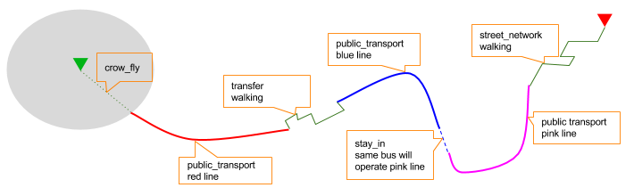
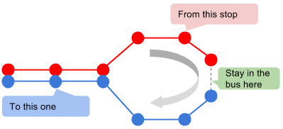
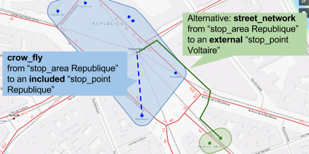

Overview
This document describes how to call navitia via the v1 interface, and the returned resources. You can read our lexicon at https://github.com/OpenTransport/vocabulary/blob/master/vocabulary.md
Endpoint
The only endpoint of this version of the api is : [https://api.navitia.io/v1/]
See authentication to find out how to use your token.
If you use a web browser, you only have to paste it in the user area, with no password. Or, in a simplier way, you can add your token in the address bar like : https://my-token-is-mine-and-i-will-never-clearly-give-it@api.navitia.io/v1/coverage/fr-idf/networks
Some easy examples
- Geographical coverage of the service > https://api.navitia.io/v1/coverage
- Where am I? (WGS 84 coordinates)
curl "https://api.navitia.io/v1/coverage"
The above command returns JSON structured like this:
{
"status": "running",
"name": null,
"start_production_date": "20150812",
"shape": "MULTIPOLYGON(((-73.67898 40.40823,-74.35528 38.91679,-74.98257 38.77274,-74.9897 38.77609,-75.26353 39.17828,-75.55589 39.4284,-75.57847 39.48183,-75.54245 39.56827,-75.58291 39.63288,-75.5274 39.67216,-75.46674 39.77555,-75.4192 39.79948,-75.42233 39.80093,-75.41531 39.80156,-75.41537 39.80272,-75.39101 39.81585,-75.35486 39.84045,-75.34198 39.84673,-75.32335 39.8505,-75.27135 39.85013,-75.24368 39.85527,-75.22147 39.86171,-75.18897 39.8815,-75.14408 39.88563,-75.13784 39.89042,-75.13198 39.89948,-75.12923 39.90922,-75.12896 39.91304,-75.13808 39.93153,-75.13593 39.95078,-75.13111 39.95908,-75.11728 39.96748,-75.07164 39.98109,-75.06517 39.98755,-75.05039 40.01017,-75.01981 40.01912,-74.97586 40.04865,-74.93943 40.06759,-74.92419 40.07193,-74.90521 40.07352,-74.86216 40.08404,-74.85503 40.09383,-74.84252 40.09913,-74.83642 40.1039,-74.83001 40.11954,-74.82286 40.12746,-74.81535 40.12838,-74.79926 40.12338,-74.78432 40.12116,-74.75994 40.13447,-74.74149 40.1358,-74.72499 40.14687,-74.72247 40.15782,-74.7376 40.17702,-74.75483 40.18475,-74.7612 40.19853,-74.77121 40.21441,-74.7956 40.22877,-74.81975 40.23785,-74.83655 40.24555,-74.84272 40.24994,-74.8611 40.28423,-74.86872 40.29472,-74.89192 40.31238,-74.90867 40.31631,-74.94023 40.33754,-74.94518 40.34484,-74.94955 40.36478,-74.967 40.39761,-74.9834 40.40395,-74.98871 40.40786,-74.99591 40.40969,-75.02293 40.403,-75.02878 40.40329,-75.03476 40.40545,-75.04586 40.41306,-75.05911 40.41774,-75.0625 40.42388,-75.06663 40.44512,-75.07137 40.45671,-75.06771 40.46545,-75.06839 40.47386,-75.06337 40.48052,-75.0658 40.52632,-75.06873 40.54117,-75.07848 40.54733,-75.10018 40.56679,-75.11574 40.57219,-75.14002 40.57468,-75.14807 40.57141,-75.15876 40.5642,-75.17048 40.56347,-75.18519 40.56767,-75.19619 40.57851,-75.19467 40.58331,-75.19032 40.58798,-75.19008 40.59085,-75.19295 40.60236,-75.20194 40.61426,-75.2025 40.61732,-75.19812 40.61999,-75.19106 40.62059,-75.18929 40.62465,-75.19288 40.64043,-75.20096 40.6464,-75.20114 40.64935,-75.19138 40.66239,-75.1832 40.66654,-75.17753 40.67566,-75.18079 40.67869,-75.19065 40.67868,-75.19723 40.68067,-75.20149 40.6851,-75.20462 40.69158,-75.19505 40.71433,-75.18781 40.71951,-75.18671 40.72525,-75.18281 40.7315,-75.18628 40.73677,-75.19595 40.74512,-75.1971 40.75205,-75.19216 40.75643,-75.17954 40.76241,-75.17625 40.77323,-75.17182 40.7784,-75.16364 40.77909,-75.15182 40.77583,-75.13452 40.77446,-75.12347 40.78733,-75.10877 40.79115,-75.10122 40.79951,-75.10062 40.80731,-75.09886 40.81044,-75.09059 40.81569,-75.08364 40.82589,-75.08569 40.82966,-75.09717 40.83888,-75.09759 40.8445,-75.09578 40.84737,-75.09108 40.8496,-75.07673 40.85057,-75.07213 40.84775,-75.06469 40.84842,-75.06175 40.85675,-75.05192 40.86468,-75.05121 40.86779,-75.05259 40.8717,-75.07557 40.89393,-75.07522 40.89994,-75.07722 40.90964,-75.07965 40.91376,-75.09606 40.92369,-75.10613 40.93595,-75.11221 40.94763,-75.11837 40.95268,-75.12103 40.96789,-75.1228 40.9694,-75.13146 40.96858,-75.13438 40.97061,-75.13621 40.97701,-75.13277 40.98278,-75.13113 40.99152,-75.11014 41.00429,-75.09987 41.00824,-75.09009 41.01518,-75.06553 41.02212,-75.04104 41.03236,-75.02707 41.0444,-75.01971 41.05343,-75.01312 41.06672,-75.00666 41.06824,-74.99518 41.07717,-74.9924 41.09242,-74.98025 41.11101,-74.9484 41.12409,-74.9483 41.12667,-74.94538 41.12968,-74.9236 41.13871,-74.90243 41.16166,-74.90182 41.16414,-74.87889 41.19082,-74.861 41.21782,-74.86132 41.22181,-74.8681 41.22782,-74.86681 41.23244,-74.85775 41.24934,-74.84719 41.26142,-74.83893 41.2777,-74.83058 41.28767,-74.82223 41.29445,-74.79304 41.3138,-74.7965 41.31835,-74.79544 41.32098,-74.79241 41.3231,-74.76716 41.3291,-74.7641 41.33196,-74.76092 41.34069,-74.75351 41.34677,-74.72112 41.34806,-74.69624 41.35807,-74.69139 41.36237,-74.6925 41.36625,-74.70971 41.37776,-74.71698 41.39116,-74.73449 41.3955,-74.74241 41.40423,-74.74268 41.41199,-74.79056 41.41997,-74.79671 41.4229,-74.8375 41.43003,-74.89413 41.43724,-74.90792 41.45978,-74.91339 41.47409,-74.95795 41.47472,-74.98442 41.47958,-74.98729 41.48573,-75.02641 41.53469,-75.04174 41.56854,-75.07627 41.60533,-75.07609 41.60877,-75.06077 41.61904,-75.05035 41.63365,-75.05151 41.66186,-75.06102 41.6721,-75.07052 41.70797,-75.0565 41.7349,-75.10122 41.76744,-75.10634 41.77415,-75.10265 41.78915,-75.11682 41.82697,-75.15279 41.84687,-75.16248 41.84842,-75.17027 41.85854,-75.22345 41.85578,-75.26141 41.86235,-75.27285 41.88668,-75.28044 41.93762,-75.30121 41.94674,-75.31109 41.94748,-75.31946 41.95313,-75.32144 41.95956,-75.33021 41.96673,-75.34324 41.97152,-75.33934 41.98631,-75.34715 41.99372,-75.35989 41.99775,-76.34372 41.99665,-76.83508 42.00007,-77.83203 41.99682,-78.12473 41.99875,-78.87475 41.99586,-79.76227 41.99717,-79.76341 42.51535,-79.76506 42.58461,-78.96358 42.85492,-78.91168 42.9007,-78.90971 42.91847,-78.91692 42.93863,-78.93397 42.95207,-78.95954 42.95303,-78.99561 42.97607,-79.02249 42.98854,-79.0284 43.01012,-79.02512 43.0245,-79.01266 43.0408,-79.02381 43.06572,-79.07725 43.07621,-79.07806 43.0817,-79.06436 43.09681,-79.05952 43.11014,-79.06302 43.11543,-79.07295 43.12112,-79.0555 43.13014,-79.04556 43.14151,-79.0469 43.15326,-79.05496 43.17364,-79.05147 43.20008,-79.05872 43.20908,-79.05523 43.22318,-79.05926 43.23805,-79.05791 43.25174,-79.07537 43.26426,-79.21691 43.45496,-78.6726 43.65219,-76.84807 43.69868,-76.45111 44.11666,-76.32897 44.2207,-75.85568 44.43367,-75.7763 44.52444,-75.65436 44.61354,-75.5074 44.72695,-75.33855 44.84013,-75.09466 44.95088,-74.92269 45.01281,-74.78511 45.0327,-74.74134 45.00175,-74.70615 45.00607,-74.49098 45.00335,-73.90313 45.00607,-73.34192 45.01707,-73.34161 45.01006,-73.35027 44.98789,-73.33659 44.96516,-73.33733 44.91725,-73.3566 44.90049,-73.3745 44.84451,-73.32068 44.79913,-73.35302 44.75426,-73.36331 44.66979,-73.35931 44.58785,-73.30236 44.50273,-73.29192 44.44042,-73.31064 44.28039,-73.31017 44.25112,-73.36073 44.20743,-73.38899 44.18992,-73.388 44.18089,-73.41738 44.08594,-73.43595 44.04504,-73.40978 44.02832,-73.40613 44.02186,-73.40431 44.01114,-73.41091 43.98023,-73.40513 43.96744,-73.40383 43.94893,-73.40684 43.933,-73.3945 43.90407,-73.37151 43.87819,-73.3803 43.85526,-73.37063 43.84482,-73.37563 43.83796,-73.3871 43.83125,-73.39088 43.82142,-73.37934 43.81182,-73.37503 43.79993,-73.3562 43.78697,-73.3489 43.77181,-73.36818 43.7435,-73.36918 43.72441,-73.38461 43.71019,-73.39416 43.69581,-73.40246 43.68102,-73.41394 43.6518,-73.42494 43.6418,-73.4264 43.63528,-73.41599 43.62144,-73.37293 43.62584,-73.30584 43.62967,-73.30107 43.62654,-73.29874 43.61207,-73.29056 43.60285,-73.29119 43.59332,-73.29439 43.58798,-73.28419 43.58081,-73.26876 43.57356,-73.25764 43.56633,-73.24719 43.55474,-73.23995 43.53544,-73.24043 43.52855,-73.24599 43.52291,-73.25479 43.25919,-73.27697 42.83333,-73.2838 42.83305,-73.28531 42.82046,-73.2821 42.81347,-73.28909 42.80155,-73.27495 42.74733,-73.26568 42.74502,-73.50635 42.08621,-73.49562 42.05137,-73.48563 42.0499,-73.48792 42.00001,-73.54915 41.29592,-73.4811 41.2122,-73.72497 41.10007,-73.65324 41.01261,-73.65845 41.00048,-73.65437 40.97903,-73.41134 40.98698,-72.08541 41.24737,-70.6222 40.50414,-70.7503 40.36936,-71.94403 40.03666,-73.67898 40.40823)))",
"end_production_date": "20160730",
"error": null,
"last_load_at": "20150909T144557",
"id": "us-ny"
},
* https://api.navitia.io/v1/coord/2.377310;48.847002 * I’m on the “/fr-idf” coverage, at “20, rue Hector Malot in Paris, France”
Which services are available on this coverage? Let’s take a look at the links at the bottom of this stream
Networks available? (see what network_ is)
RATP network lines? > https://api.navitia.io/v1/coverage/fr-idf/networks/network:RTP/lines
Too much lines, let’s use physical mode filtering
By the way, what stuff are close to me?
Resources
All the resources return a response containing a links object, a paging object, and the requested object.
Coverage : List of the region covered by navitia
get/coverageList of the areas covered by navitia get/coverage/region_idInformation about a specific region get/coverage/region_id/coords/lon;latInformation about a specific region Public transportation objects : List of the public transport objects of a region
get/coverage/region_id/collection_nameCollection of objects of a region get` /coverage/region_id/collection_name/object_idInformation about a specific region get` /coverage/lon;lat/collection_nameCollection of objects of a region get` /coverage/lon;lat/collection_name/object_idInformation about a specific region Journeys : Compute journeys
get` /coverage/resource_path/journeys |
List of journeys |
get` /journeys |
List of journeys |
- Route Schedules : Compute route schedules for a given resource
get` /coverage/resource_path/route_schedules |
List of the route schedules |
- Stop Schedules : Compute stop schedules for a given resource
get /coverage/resource_path/stop_schedules |
List of the stop schedules |
- Departures : List of the next departures for a given resource
get /coverage/resource_path/departures |
List of the departures |
- Arrivals : List of the next departures for a given resource
get /coverage/resource_path/arrivals |
List of the arrivals |
- Places : Search in the datas
get /coverage/places |
List of objects |
- Places nearby : List of objects near an object or a coord
get /coverage/resource_path/places_nearby |
List of objects near the resource |
get /coverage/lon;lat/places_nearby |
List of objects near the resource |
Authentication
You must authenticate to use navitia.io. When you register we give you a authentication key to the API.
You must use the Basic HTTP authentication, where the username is the key, and without password.
$(document).ready(function(){
$.ajaxSetup({
beforeSend: function(xhr) { xhr.setRequestHeader("Authorization", "Basic " + btoa("Your-token-here" + ":"));}
});
});
# With shell, you can just pass the correct header with each request
curl "api_endpoint_here"
Make sure to replace “Your-token-here” with your API key.
APIS
Journeys (/journeys)
This api computes journeys.
If used within the coverage api, it will retrieve the next journeys from the selected public transport object or coordinates.
There are two ways to access this api.
The first one is: https://api.navitia.io/v1/{a_path_to_resource}/journeys it will retrieve all the journeys from the resource (isochrones).
The other one, the most used, is to access the ‘journey’ api endpoint: https://api.navitia.io/v1/journeys?from={resource_id_1}&to={resource_id_2}&datetime={datetime} .
Main Parameters
| Required | Name | Type | Description | Default value |
|---|---|---|---|---|
| nop | from | id | The id of the departure of your journey If none are provided an isochrone is computed | |
| nop | to | id | The id of the arrival of your journey If none are provided an isochrone is computed | |
| yep | datetime | datetime | A datetime | |
| nop | datetime_represents | string | Can be departure or arrival. If departure, the request will retrieve journeys starting after datetime. If arrival it will retrieve journeys arriving before datetime. |
departure |
| nop | forbidden_uris[] | id | If you want to avoid lines, modes, |
Other parameters
| nop | first_section_mode[] | array of | Force the first section mode if the first section is not a public transport one. It takes one the following values: walking, car, bike, bss bss stands for bike sharing system It’s an array, you can give multiple modes Note: choosing bss implicitly allows the walking mode since you might have to walk to the bss station |
walking |
| nop | last_section_mode[] | array of string | Same as first_section_mode but for the last section | walking |
| nop | max_duration_to_pt | int | Maximum allowed duration to reach the | 15*60 s |
| public transport | ||||
| Use this to limit the walking/biking part | ||||
| Unit is seconds | ||||
| nop | walking_speed | float | Walking speed for the fallback sections | 1.12 m/s |
| Speed unit must be in meter/seconds | (4 km/h) | |||
| nop | bike_speed | float | Biking speed for the fallback sections | 4.1 m/s |
| Speed unit must be in meter/seconds | (14.7 km/h) | |||
| nop | bss_speed | float | Speed while using a bike from a bike | 4.1 m/s |
| sharing system for the fallback sections | (14.7 km/h) | |||
| Speed unit must be in meter/seconds | ||||
| nop | car_speed | float | Driving speed for the fallback sections | 16.8 m/s |
| Speed unit must be in meter/seconds | (60 km/h) | |||
| nop | min_nb_journeys | int | Minimum number of different suggested | |
| trips | ||||
More in multiple_journeys_ |
||||
| nop | max_nb_journeys | int | Maximum number of different suggested | |
| trips | ||||
More in multiple_journeys_ |
||||
| nop | count | int | Fixed number of different journeys | |
More in multiple_journeys_ |
||||
| nop | max_nb_tranfers | int | Maximum of number transfers | 10 |
| nop | disruption_active | boolean | If true the algorithm take the disruptions | False |
| into account, and thus avoid disrupted | ||||
| public transport | ||||
| nop | wheelchair | boolean | If true the traveler is considered to | False |
| be using a wheelchair, thus only | ||||
| accessible public transport are used | ||||
| be warned: many data are currently too | ||||
| faint to provide acceptable answers | ||||
| with this parameter on | ||||
| nop | show_codes | boolean | If true add internal id in the response | False |
| nop | debug | boolean | Debug mode | False |
| No journeys are filtered in this mode |
Objects
Here is a typical journey, all sections are detailed below

Main response object
| Field | Type | Description |
|---|---|---|
| journeys | array of journeys_ | List of computed journeys |
| links | link_ | Links related to the journeys |
Journey object
| Field | Type | Description |
|---|---|---|
| duration | int | Duration of the journey |
| nb_transfers | int | Number of transfers in the journey |
| departure_date_time | date-time_ |
Departure date and time of the journey |
| requested_date_time | date-time_ |
Requested date and time of the journey |
| arrival_date_time | date-time_ |
Arrival date and time of the journey |
| sections | array of section_ |
All the sections of the journey |
| from | places_ | The place from where the journey starts |
| to | places_ | The place from where the journey ends |
| links | link_ |
Links related to this journey |
| type | enum string | Used to qualify a journey. |
See the journey-qualif_ section for more information |
||
| fare | fare_ | Fare of the journey (tickets and price) |
| tags | array of string | List of tags on the journey. The tags add additional |
| information on the journey beside the journey type. | ||
See for example multiple_journeys_. |
Section object
| Field | Type | Description |
|---|---|---|
| type | enum string | Type of the section, it can be: |
* public_transport: public transport section |
||
* street_network: street section |
||
* waiting: waiting section between transport |
||
* stay_in: this “stay in the vehicle” section |
||
| occurs when the traveller has to stay in the | ||
| vehicle when the bus change its routing. | ||
| Here is an exemple for a journey from A to B: | ||
| (lollipop line) | ||
|  | ||
* transfer: transfert section |
||
* crow_fly: teleportation section. |
||
| Used when starting or arriving to a city or a | ||
| stoparea (“potato shaped” objects) | ||
| Useful to make navitia idempotent. | ||
| Be careful: no “path” nor “geojson” items in | ||
| this case | ||
|  | ||
* on_demand_transport: vehicle may not drive |
||
| along: traveler will have to call agency to | ||
| confirm journey | ||
* bss_rent: taking a bike from a bike sharing |
||
| system (bss) | ||
* bss_put_back: putting back a bike from a bike |
||
| sharing system (bss) | ||
* boarding: boarding on plane |
||
* landing: landing off the plane |
||
| id | string | Id of the section |
| mode | enum string | Mode of the street network: |
Walking, Bike, Car |
||
| duration | int | Duration of this section |
| from | places_ | Origin place of this section |
| to | places_ | Destination place of this section |
| links | Array of link_ | Links related to this section |
| display_informations | display_informations_ | Useful information to display |
| additionnal_informations | enum string | Other information. It can be: |
* regular: no on demand transport (odt) |
||
* has_date_time_estimated: section with at |
||
| least one estimated date time | ||
* odt_with_stop_time: odt with |
||
| fixed schedule, but travelers have to call | ||
| agency! | ||
* odt_with_stop_point: odt where pickup or |
||
| drop off are specific points | ||
* odt_with_zone: odt which is like a cab, |
||
| from wherever you want to wherever you want, | ||
| whenever it is possible | ||
| geojson | GeoJson <http://www.geojson.org>_ |
|
| path | Array of path_ | The path of this section |
| transfer_type | enum string | The type of this transfer it can be: walking, |
guaranteed, extension |
||
| stop_date_times | Array of stop_date_time_ | List of the stop times of this section |
| departure_date_time | date-time_ |
Date and time of departure |
| arrival_date_time | date-time_ |
Date and time of arrival |
Path object
A path object in composed of an array of path_item_ (segment).
Path item object
| Field | Type | Description |
|---|---|---|
| length | int | Length (in meter) of the segment |
| name | string | name of the way corresponding to the segment |
| duration | int | duration (in seconds) of the segment |
| direction | int | Angle (in degree) between the previous segment and |
| this segment. | ||
| * 0 means going straight | ||
| * > 0 means turning right | ||
| * < 0 means turning left | ||
| Hope it’s easier to understand with a picture: | ||
| .. image:: direction.png | ||
| :scale: 50 % |
Fare object
| Field | Type | Description |
|---|---|---|
| total | cost_ | total cost of the journey |
| found | boolean | False if no fare has been found for the journey, True otherwise |
| links | link_ | Links related to this object. Link with related tickets <ticket>_ |
Cost object
| Field | Type | Description |
|---|---|---|
| value | float | cost |
| currency | string | currency |
Ticket object
| Field | Type | Description |
|---|---|---|
| id | string | Id of the ticket |
| name | string | Name of the ticket |
| found | boolean | False if unknown ticket, True otherwise |
| cost | cost | Cost of the ticket |
| links | array of link | Link to the section using this ticket |
Test d'affichage
All the resources return a response containing a links object, a paging object, and the requested object.
- Coverage : List of the region covered by navitia
List of the areas covered by navitia
get /coverage
Information about a specific region
get /coverage/region_id
Information about a specific region
Change values region_id and lon;lat
get /coverage/region_id/coords/lon;lat
- Public transportation objects : List of the public transport objects of a region
get /coverage/region_id/collection_name
get /coverage/region_id/collection_name/object_id
get /coverage/lon;lat/collection_name
get /coverage/lon;lat/collection_name/object_id
- Journeys (v0) : Compute journeys List of journeys
get /coverage/resource_path/journeys |
List of journeys |
get /journeys |
List of journeys |
- Journeys (v1) : Compute journeys
List of journeys
get /coverage/resource_path/journeys |
get /journeys |
- Journeys (v2) : Compute journeys
List of journeys
get /coverage/resource_path/journeys |
get /journeys |
- Journeys (v3) : Compute journeys
get /coverage/resource_path/journeys |
get /journeys |
Ticket object (v0)
| Field | Type | Description |
|---|---|---|
| id | string | Id of the ticket |
| name | string | Name of the ticket |
| found | boolean | False if unknown ticket, True otherwise |
| cost | cost | Cost of the ticket |
| links | array of link | Link to the section using this ticket |
Ticket object (v1)
| Field | Type | Description |
|---|---|---|
| id | string | Id of the ticket |
| name | string | Name of the ticket |
| found | boolean | False if unknown ticket, True otherwise |
| cost | cost | Cost of the ticket |
| links | array of link | Link to the section using this ticket |
Errors
Example
{
"error": {
"id": "bad_filter",
"message": "ptref : Filters: Unable to find object"
}
}
Code 40x
This errors appears when there is an error in the request
The are two possible 40x http codes :
- Code 404:
| Error id | Description |
|---|---|
| date_out_of_bounds | When the given date is out of bounds of the production dates of the region |
| no_origin | Couldn’t find an origin for the journeys |
| no_destination | Couldn’t find an destination for the journeys |
| no_origin_nor_destination | Couldn’t find an origin nor a destination for the journeys |
| unknown_object | As it’s said |
- Code 400:
| Error id | Description |
|---|---|
| bad_filter | When you use a custom filter |
| unable_to_parse | When you use a mal-formed custom filter |
Code 50x
Ouch. Technical issue :/
Code 204
When your request is good but we are not able to find a journey